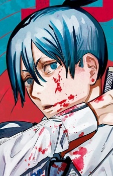

Описание
Хаякава Аки привлекательный юноша с черными волосами средней длины и зелеными глазами. Как правило он носит прическу в стиле Топ кнот. Аки часто одет в костюм и носит галстук. Также он носит серьги на ушах и обычно носит свой меч на спине.
Член специального отряда Макимы. Заключил контракт с демоном-лисом, которому взамен на силу отдаёт части своего тела. Также носит катану, которая даёт огромную силу, но сокращает продолжительность жизни.
|
Внешность

Другие персонажи
Макима
Пауэр
Дэндзи
|